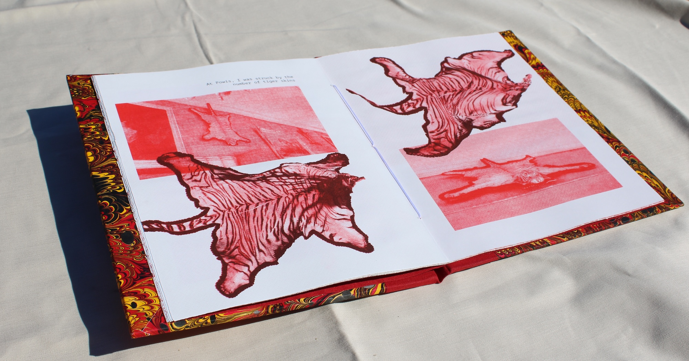
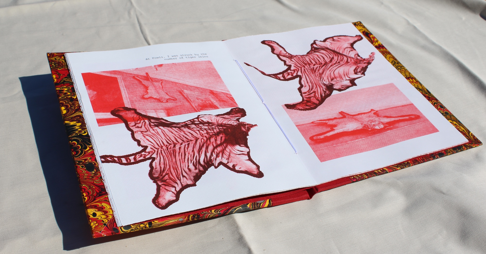

A·kin
A·kin looks at how photographic archives and family albums are seen and categorized by humans and machine vision systems. The project highlights the difficulties to grasp anthropological, historical and cultural notions about personal and collective identity when considering photographs as mere data points.
The work is created using my personal family photographs from Tamil Nadu, as well as images from the Studies in Tamil Studio Archives and Society (stars.archive) Archive, a collection which investigates the history of South Indian studio photography between the 1880s and the 1980s. The installation includes groupings of photographs organized first by an image classification model (VGG16) and then further by my intuition. Each group is represented by a central node image, a composite averaging all of the images within the cluster. At the center of the wall a video includes oral interviews with family members reflecting on the photographs, and S.T.A.R.S. Archive researchers sharing insights on the particularities of eastern studio archives and family albums in relationship with the western view. On the opposite wall are six gold risograph prints on black paper, each showcasing a composite image from a cluster. Along with the physical installation, I've created a new digital commission.
The interactive website invites visitors to pull apart each of the photographs included on the composites. Through this process, the provenance and protagonists of each image are revealed, along with other anthropological and cultural indicators. The contextualizing information offers further understanding about the historically shifting notions of individual and collective representation within colonial and post-colonial contexts.
Studies in Tamil Studio Archives and Society(stars.archive) is a multidisciplinary research collective which aims to investigate the history of Tamil studio photography between the 1880s and the 1980s as well as to protect and promote the rich and vulnerable photographic productions.
UW Sonnentag (for Seven Mile Media)
An interactive touchscreen display for the new Sonnentag Building at University of Wisconsin. This display includes interactive 3D models, Data Visualizations, and supplemental text about the building's sustainability features. I helped Seven Mile Media program an interactive and informational touchscreen display for the new Sonnentag Building at University of Wisconsin. Includes interactive 3D models, Data visualizations and text about the building's sustainability features.
Interactive display for Autodesk
An interactive touchscreen display for the Autodesk Co-Lab Pavillion that was part of the FUTURES exhibit at the Smithsonian Arts + Industries Building in November 2021. The touchscreen display showcases four examples of designs utilizing Autodesk's AI software: Hyundai's "walking" vehicle design, NASA’s Jet Propulsion Lab's design for a lander, A minimal chair design by Philippe Starck in collaboration with Kartell, and the exhibit pavilion structure itself. The interactive gave context for each design including interactive 3D models that showed some of the novel characteristics of each design.

Flight Simulator Pin Design for Laurel Schwulst & Soft
Flight Simulator is a collaboration between Laurel Schwulst and Soft. It is an app for iOS and Android and an "ode to airplane mode." Users put their phone in airplane mode for the duration of a real flight in order to "travel" to this location and earn pins for each airport visited. I was commissioned for the pin designs. I created code to generate 500 pin designs based on data around the airports such as climate, timezone, number of routes, and altitude. The shape of the pins are according to the altitude (the spikier the higher), the color is a combination of different aspects of the climate, the bubbles on the outer edge symbolize the number of routes, and the size of the center bubble represents the timezone.
Rituals of Recursion
I developed a computer program that allows me to translate text into Kolam designs. Kolam (in Tamil) or Muggu (Telugu) is a traditional art form from South India. Kolams are auspicious drawings on the floor (usually at the threshold of the home) using rice flour. Kolams are traditionally made by women and created before sunrise. They comprise mathematically complex patterns that feature continuous intertwined lines.
To encode text into Kolam designs, I first translate each character into eight-digit binary codes (made from only 0s and 1s). I then use an algorithm to map this translation onto a diamond-shaped matrix of dots. The algorithm moves top to bottom and left to right, drawing loops on each dot that correspond with either 0 or 1 according to the binary code translation of the text. The algorithm connects these loops, making sure to never connect loops associated with “0” to those associated with “1”. The center of the matrix contains blank padding space, allowing the entire pattern to be distributed evenly on the matrix, preserving the perfect square/diamond shape.
I started working with kolams because I wanted to translate my grandmother’s name, Swarajyalaxmi, into a kolam as part of a reclamation of a mourning ritual after her passing in 2022. My family mourned my grandmother by invoking three generations following a patriarchal line (my grandmother, her mother-in-law, and her mother-in-law’s mother-in-law). In contrast, I worked matrilineally, creating three kolams representing Swarajyalaxmi, Kameswaramma (her mother), and Rajyalaxmi (her grandmother).
In this exhibition, I expand on this work by incorporating new letterpress printed works created using a set of 3D-printed kolam monotype blocks. There are kolams for my grandmother, her mother, and her grandmother but I also include letterpress prints that extend the process beyond familial connections. There are kolams commissioned by friends honoring their loved ones, kolams honoring martyrs, specific places, and some that feature messages of resilience and resistance. In these works, I see the act of translation as a ritual of reverence. Each kolam becomes an invocation and an offering. I invite all to spend time with each kolam and decode its meaning.
Together, these works explore the recursive nature of identity: names containing histories and personal stories intertwining with collective memory.
In the Belly of the Beast
In The Belly of the Beast (https://bellyofthebeast.online/) is a multifaceted artwork that includes an interactive website, two artist books, and porcelain bookends. The work is inspired by Tipu's Tiger, a famous automaton depicting a tiger mauling a British soldier, which was seized from Tipu Sultan in 1799 and now resides at the V&A Museum in London. A central feature of the website is a 3D scan of Tipu's Tiger, captured using my cell phone. When visitors explore the interior of the tiger's belly, they encounter videos, including footage of the Robert Clive statue in London and the Clive Museum at Powis Castle, Wales, among others. While inside the "belly of the beast," viewers are invited to symbolically "feed the tiger."
Robert Clive, a key figure in establishing the British East India Company's rule in India, is associated with the Bengal famine, during which nearly 3 million people died of starvation. The Clive collection at Powis Castle contains many of Tipu Sultan’s personal belongings.
One of the accompanying artist books is an accordion-fold design, modeled after Tipu's Tiger but reimagined in an upright position. When opened, the book splits the tiger's belly, revealing the figure of Robert Clive. The porcelain bookends were cast from 3D-printed molds of the repositioned tiger scan. The larger book delves into themes such as tiger hunting in colonial India, the tiger as a symbol of resistance and strength, and the broader meaning of being "in the belly of the beast."
Research for this project was conducted during a residency with the Vasari Research Centre for Art and Technology and supported by a grant from the Experimental Humanities Collaborative Network.

 

Teaching Practice
I have taught critical/creative coding at various institutions such as Parsons School for Design, School for Poetic Computation, Bard College, Pratt Institute, and China Academy of Art. Some courses I've taught are Data As Material, Critical Computation, Machine Media: A Hands-On Introduction to Machine Learning and Generative Art, and Emerging Imaging Technologies. My students deeply inspire me with their work and my teaching practice also helps me shape my practice as a technologist in a way that consistently considers the ethical and cultural implications of my work. It's also helped me keep up to date on technological advancements and really solidify my skills through sharing them with others. You can view my teaching portfolio here.
I knew that if I walked in your footsteps, it would become a ritual
For this work, I developed a machine learning model based on my own family photographs that is able to create its own images that combine and emulate characteristics of my family photos. I think of the model's remixing and approximating as a metaphor for personal and generational memory. I feel that our understanding of the past is always an approximation. Names are forgotten, moments are conflated with other ones. Memory is something that mutates over time and over generations. I think of this at times, as less of a fault and more of a healing fluidity that allows us to process the past in a way that's enmeshed with the context of the present.
The form of this work is a video piece and series of prints. For the video, family members were asked to speak about specific photographs. Images generated from the machine learning model are animated using footage from these interviews. The facial expressions mimic the original expressions of the family member and the audio is from their original voice. The photographs that are the subject of the interviews are also shown alongside the speaker. Surrounding the video are prints of the generated images mixed with actual family photographs.
Slashing Gender in Halloween
For a Halloween-themed experiment, we used machine learning to help analyze the scene settings and content in the 1978 movie “Halloween.” We used TensorFlow img2txt to generate descriptions for each frame and then ran python scripts to pull frames based on word descriptions. Using the specific content we could get specific percentages and frame amounts for quantitative data surrounding gender stereotypes.